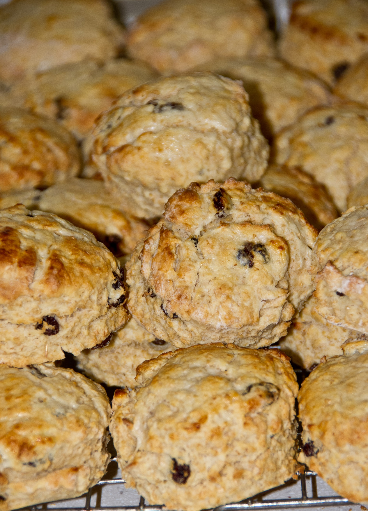

Flour Shower Patisserie grew out of a passion for baking, experimenting with different ingrediants to produce a variety of delicious confectionery and spending time with loved ones in the kitchen. We created the recipes that are suitable for those with no experience in baking, from children to adults. Every week we feature a new simple recipe on our website. Accessing to the recipe is simple, either click the link or scroll down to the recipe section, and you will get started baking. You will descover a list of everything you will need that is the ingrediants and tools needed as well as a step by step method instructions and a tutorial video. To recieve our weekly recipes as well as past recipes, sign up to our weekly news letter. You will also have accesss to a variety of recomamndations to help you improve your baking. To conatact us, visit our social media platforms linked at the bottom of the page. With our easy to follow recipes, you will soon be hooked to your oven!
Simple and easy to follow recipe for delicious scones for beginners.This Delicious and Rich Quick scones, that Softly melts in your mouth is a must try.
Preheat oven to 190•C and ready your baking tray lined with parchment paper.
Note: if you're making your own buttermilk, I will advice you make it earlier, so you're able to chill it before use. Leave it out on a counter after adding the lemon juice to sit for about 15minutes. Then refrigerate for use when your ready. It can last up to 5days in the refrigerator.
Sign Up to our website to recieve weekly baking recipes and tips. Simply fill your details in the boxes on the form below and click on the submit button.